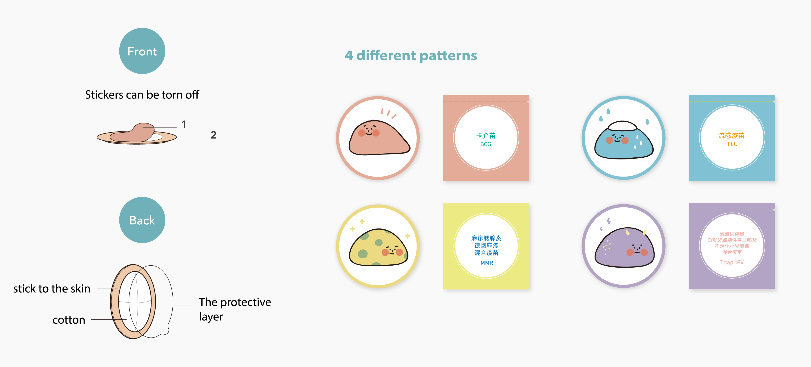

Project Objectives
When children get a vaccination, they often express their fear and anxiety by crying. To deal with the crying children, parents adopt different approaches, and some of these approaches indirectly impact the young mind in a
negative way. Apart from verbal comfort, what can we do to soothe the child's uneasiness?
Design Object
Cognitive Development Theory from Piaget
Children in these ages like to pretend to be an imaginary person, things,
for example,
1. Relational role / ex.mother, brother
2. Special role / ex.doctor, teacher
3. Imaginary role
Vaccinations which children may get during this period
1. BCG
2. MMR
3. FLU
4. DTaP-HepB-IPV
Observation
Some parents will appease children in these following ways...
Analysis
After user researching and observing, there are some reasons
why children are afraid of getting vaccinated.
Emotional Map
Reasons and children's emotions at each stage.
Design Goals
This design project focuses on understanding children's fear and helps them
overcome their fear. This series of design tackles a wide range of situations: from daily life to medical services at clinics. In this collection, I’ve created some roles to teach children about vaccination through storytelling. I’ve also designed some toys,
gadgets and a video to explain the function of vaccinations that help divert
children's attention.
I hope that getting vaccinations will not be something children want to avoid,
but a fun-filled activity which they can comprehend.
Outcome
“Baby Don't Cry” Storybook
This booklet contains a sticker card and some stories. It can be placed in the children’s health handbook. The stories tell them the function of the vaccines. Each vaccine comes with a
sticker for children to collect and store on the sticker card.
Iteractive Video
This video was prepared for children while they are getting vaccinated. It distracts
children from the needles when the nurse preparing the vaccine. During the shot,
children interact with the roles in the video.
Hemostatic Cotton
The nurse will give children different hemostatic cotton which match the vaccination the child received. Children can tear off two stickers from the hemostatic cotton and put them in the booklet and any place.

Help it to fight virus!
Children can play this toy in the waiting room. They can inject the "vaccine balls" into the tracks on both sides. The balls will make a sound when they collide with each other, attracting children's attention and letting them experience the process of getting vaccinations by
pretending they are doctors. The toy also provides children an opportunity to interact with other children. Each part of the toy can be taken apart for cleaning and disinfection.